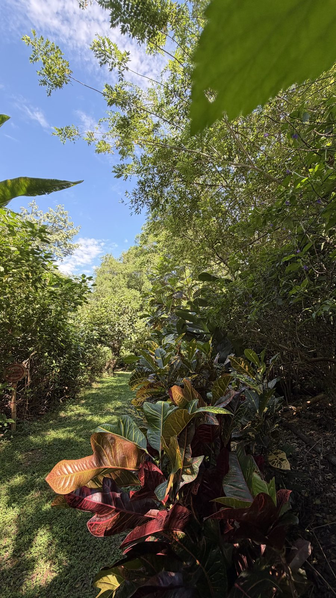
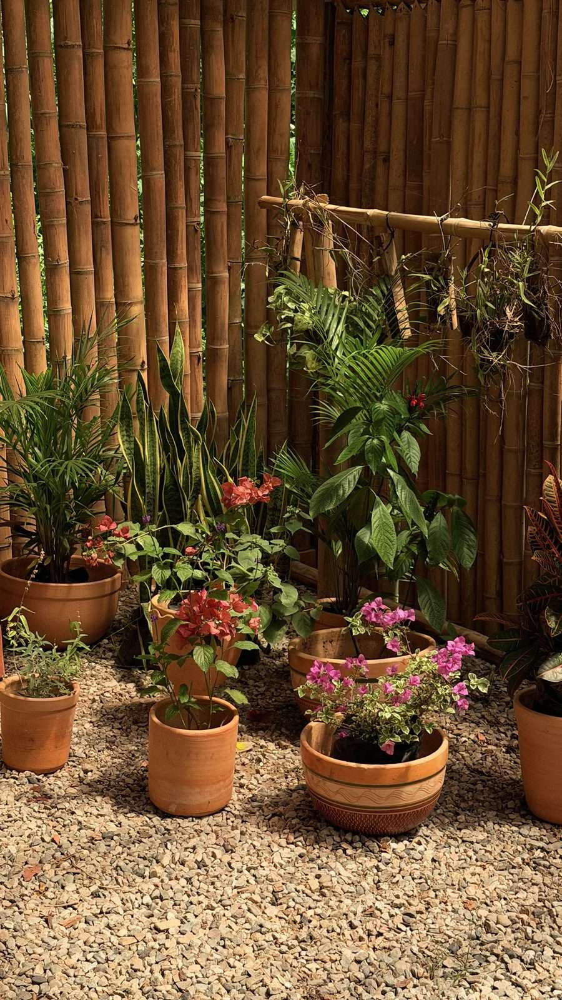
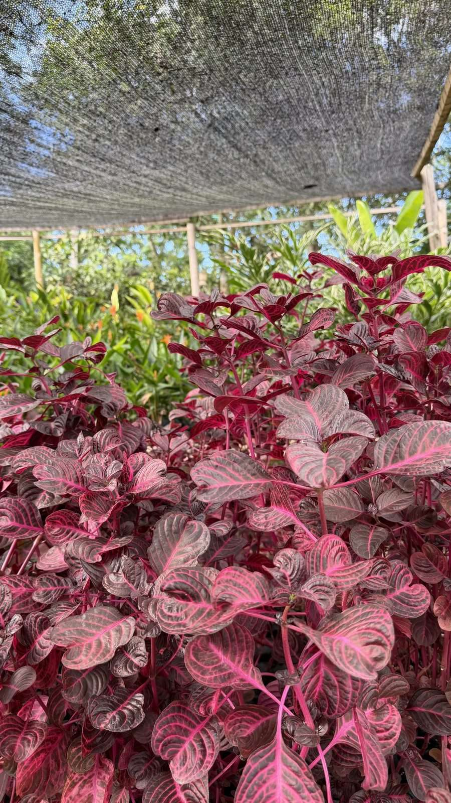
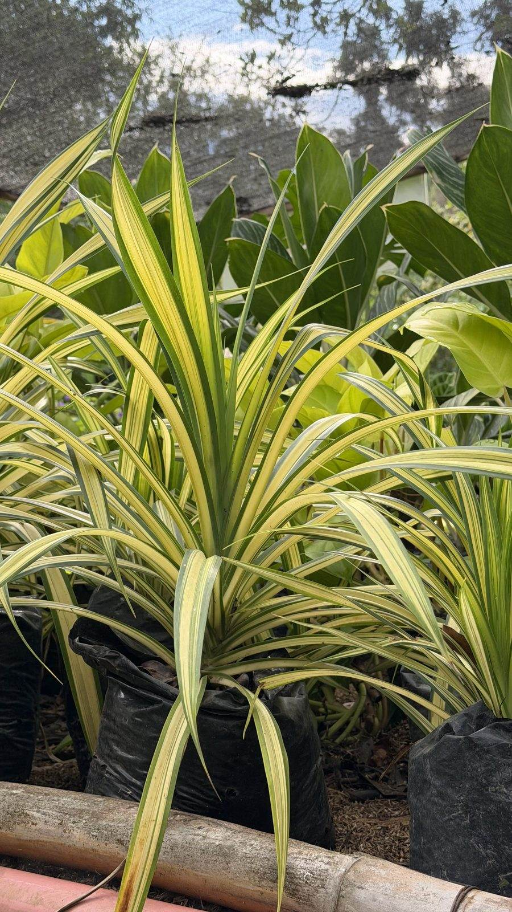
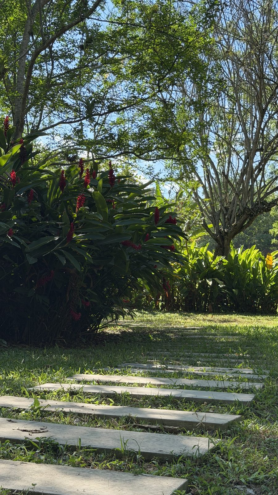

Escápate
de la ciudad
sin salir de ella
Cuatro hectáreas de bosque a 10 minutos del Anillo Vial. Nosotros ponemos los árboles; el plan lo pones tú.
Eventos y actividades
Qué puedes hacer aquí
-
 Celebrar
Bodas y conciertos con el bosque de fondo.
Ver el plan
Celebrar
Bodas y conciertos con el bosque de fondo.
Ver el plan
-
 Reunir
Cumpleaños y reuniones familiares con sitio de sobra.
Ver el plan
Reunir
Cumpleaños y reuniones familiares con sitio de sobra.
Ver el plan
-
 Trabajar
Jornadas de empresa fuera de la sala de juntas.
Ver el plan
Trabajar
Jornadas de empresa fuera de la sala de juntas.
Ver el plan
-
 Cuidarse
Yoga, pilates, funcional y caminatas terapéuticas.
Ver el plan
Cuidarse
Yoga, pilates, funcional y caminatas terapéuticas.
Ver el plan
-
 Aprender
Talleres de jardinería, pintura y emociones.
Ver el plan
Aprender
Talleres de jardinería, pintura y emociones.
Ver el plan
Cotizar por WhatsApp Ver los cinco planes ¿Vienes con un curso?
Alquiler de espacios
Cinco espacios, un mismo bosque
Escoge por tamaño y por lo que va a pasar ese día.
-
 Alameda
150 personas
La grama mejor cuidada del predio.
Ver los usos
Alameda
150 personas
La grama mejor cuidada del predio.
Ver los usos
-
 La Vega
100 personas
Una explanada plana: cabe el escenario y lo que se monte.
Ver los usos
La Vega
100 personas
Una explanada plana: cabe el escenario y lo que se monte.
Ver los usos
-
 Teatrino
70 personas
El más recogido: la gente cabe en un solo corro.
Ver los usos
Teatrino
70 personas
El más recogido: la gente cabe en un solo corro.
Ver los usos
-
 Taller
45 personas
Techado con caña: aquí el clima no manda.
Ver los usos
Taller
45 personas
Techado con caña: aquí el clima no manda.
Ver los usos
-
 Cancha
30 jugadores
Campo abierto para jugar, con sitio para 20 espectadores.
Ver los usos
Cancha
30 jugadores
Campo abierto para jugar, con sitio para 20 espectadores.
Ver los usos
Pajareo y biodiversidad
Lo que vive aquí, con nombre y apellido
- 101 Especies de aves registradas
- 347 Especies de plantas
- 57 Fotografías del concurso, de 20 autores
-

Azulejo Palmero Foto: Francheska Salazar -

Piaya Cayana Foto: Jonathan Layton Ávila -

Cucú Ardilla Foto: Andrea Elizabeth -

Barranquero Foto: Carlos Serrano -

Batará Carcajada Foto: Carlos Serrano -

Titira Inquisidor, macho Foto: Daniel Arango

El bosque
Un recorrido para mirar, no para llegar
Un recorrido guiado para mirar aves y reconocer las plantas del lugar.

El vivero
Te llevas a casa lo que crece aquí
Lo que ves sembrado afuera sale de aquí, y también te lo puedes llevar.
- Plantas
- Abonos
- Poda de árboles y raíces
- Decoración de eventos
Registro ICA, Resolución 00000819 del 3 de febrero de 2025.
-

-

-

-


Dejas el ruido atrás y entras a otro aire
Un predio privado con portería y vigilancia, no un parque público.
Se alquila a
- Colegios
- Empresas
- Particulares
Lo básico, resuelto
- Wifi
- Baños
- Vigilancia privada
- Parqueadero
Próximamente · Arenero

Nuestro compromiso
Aquí se viene a estar bien
Creemos en el poder de la conexión y el aprendizaje conjunto.
-
Educación ambiental y conciencia social
-
Desarrollo de relaciones sanas y respetuosas
-
Respeto por la naturaleza y por los demás
Cómo llegar y hablar
Estamos abiertos todos los días
Lunes a domingo, de 6:00 a. m. a 10:00 p. m.
El mapa, las referencias del sector y el formulario están en la página de contacto.